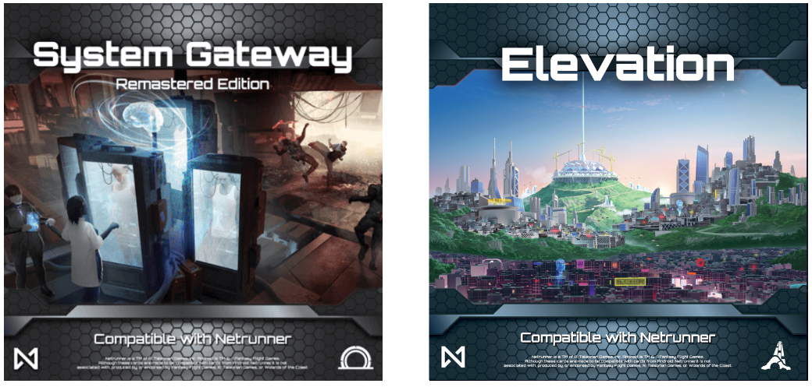
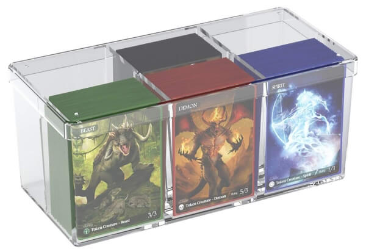
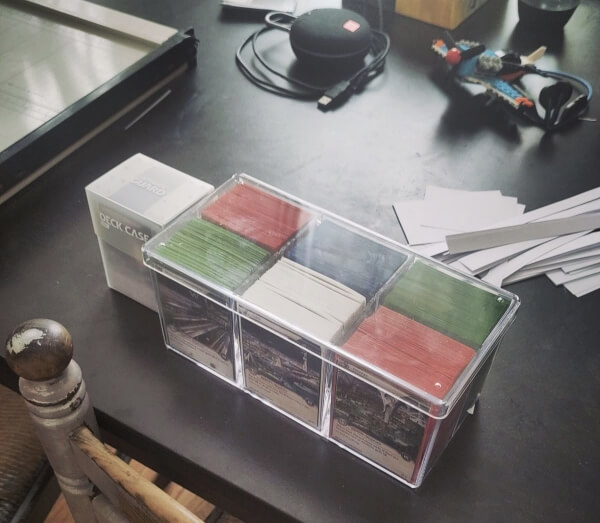

Tout le monde est passé par là : on découvre un nouveau jeu de cartes trop cool et on essaie de convaincre nos relations à l'essayer et à s'y mettre. Surtout que Netrunner a de superbes avantages de son côté : une histoire stylée, une base géniale, une communauté au top portée par une asso qui veut vrament faire kiffer les gens.
Du coup, comment on partage notre passion pour le jeu, sans forcément proposer un mode lifestyle-méta qui peut faire peur aux premier abords ? Le deck pour apprendre proposé par System Gateway est sympa pour une première partie, mais ni corp ni runner n'ont de plan de jeu, et on va vite s'ennuyer pour les parties suivantes. Il faut donc proposer la véritable expérience Netrunner JCE, avec plein de decks différents, autant de styles de jeux pour embarquer nos amis dans l'univers et le jeu.
Le problème est que le format roi, Standard, propose 900 cartes à retenir qui peut faire très peur à nos amis. Runner qui fonce tête baissée vers une ICE face cachée peut faire une mauvaise surprise qui peut casser une partie. Le format Startup est cool aussi, mais change tous les ans.
Et puis je suis tombé sur une base simple : System Gateway et Elevation. Ces deux extensions sont la base de Netrunner et NSG les ont designées en vue de porter un socle de cartes qui montre les forces du jeu. Le Core Set de Netrunner. Banco, partons sur ça.
1. Core Set

System Gateway et Elevation sont deux extensions sorties par NSG en 2021 et 2025. Elles sont en quelque sorte les sets "core" qui proposent les fondations de Netrunner et ne sont pas prêtes de bouger du système.
Proposer une série de decks qui ne prennent que ces extensions est une excellente introduction au jeu, pour plusieurs raisons :
- la première est que ces extensions sont des fondements de l'expérience Netrunner et vous donnent l'occasion de découvrir ce que peut proposer le jeu.
- la deuxième est qu'avec le nombre de cartes proposé, le sentiment d'envahissement sera restreint. Pas besoin d'apprendre par coeur 900 cartes, 150 cartes seulement suffiront !
- la troisième est qu'en y jouant, vous aurez les bases des cartes de Netrunner : il sera aisé de passer aux formats suivants
Permettez-moi donc de vous proposer une liste de decks Core Set. Cette liste a été céée avec amour par Girometics, excellent joueur de la communauté Netrunner qui avait fait ces decks pour permettre aux personnes qui débutent de découvrir le jeu.
Vous n'aurez qu'à choisir les plus amusants, les imprimer, les conserver, puis les ressortir pour vos connaissances qui veulent jouer au jeu de manière casu, sans apprendre par coeur les 900 cartes du Standard !

1.1. Corp
Voici les decks HB :
- Precision Design - Brutal Efficiency : un classique parmi les classiques, Precision Design qui essaie de scorer des agendas sans jamais laisser des cartes avec un marqueur d'avancement pendant le tour de runner.
- LEO - Agency : un deck glacier qui veut proposer des ICEs dures à briser et un serveur imprenable pour scorer.
- Poétrï - Fashion Lab : un deck qui va jouer à l'horizontale et placer plein d'assets protégés légèrement.
Voici les decks NBN :
- Reality Plus - Fine Print : un deck classique de NBN : mettre plein de tags à Runner pour gagner la guerre du tempo
- Nebula - Not So Subtle : un deck "fast advance" qui veut marquer ses agendas depuis sa main via la capacité de Nebula et des cartes qui le permettent.
- Synaspe - Gimbatul : une version plus aggressive sur les tags qui peut profiter des tags pour tuer Runner tête brulée.
Voici les decks Weyland :
- Zwicky - Quick Returns : le deck va profiter de Plutus pour gagner plein de pioche avec ses opérations jouées en pagaille.
- Built to Last - Brick Stack : l'objectif est de profiter de la capacité de Built to Last pour mettre des avancements partout qui vont provoquer des ICEs très chères à passer pour Runner.
- BAGUN - Pork Chops : un deck d'attrition qui va essayer de faire perdre le maximum de cartes côté runner et gagner à l'épuisement.
Voici les decks Jinteki :
- Restoring Humanity - Hidden Funds : la capacité de Restoring Humanity vous permettra d'avoir la richesse nécessaire pour vous payer des ICEs chères pour Runner.
- AU Co - Glyph of Warding : célèbre identité chez Jinteki qui va essayer d'envoyer un max de dégâts chez Runner.
- PT Untaian - Peculiarity : Un jeu de bluffs avec Runner avec plein de cartes face cachées qui peuvent être soit des pièges, soit des cartes qui tuent : Runner devra aller les vérifier !
1.2. Runner
Voici les decks Anarch :
- Topan - Prick Thyself : Topen représente une philosophie anarch qui est de se faire mal pour aller plus vite et ce deck le montrera.
- Ryō “Phoenix” Ōno - Dashing Mad : un deck "reg" avec une version assez aggressive ici pour faire mal à la Corp
- René Loup Arcemont - Bowel Movement : le deck va utiliser la capacité de René pour trash à peu près tout ce que propose Corp. Avec ceci, on prendra un avantage qui renversera la partie en notre faveur
Voici les decks Criminals :
- Barry “Baz” Wong - Professional Opportunities : la capacité de Baz permet d'installer plein de ressources ou hardware pour s'installer.
- Zahya Sadeghi - Tickets Please : la capacité de Zahya est très efficace pour nous forcer à run chaque tour, c'est que ce le deck propose, avec même des cartes en multi access pour gagner encore plus de crédits
- MusliHat - Shootin' 'n' Lootin' : une capacité très amusante à jouer qui vous forcera à pirater partout avec les nombreux événements de piratage.
Voici les decks Shaper :
- Dewi Subrotoputri - Enthusiasm : Dewi aime bien pirater des serveurs en alternant sa capacité et piocher et gagner des crédits.
- Tāo Salonga - Flow and Ebb : la capacité de Tāo permet de transformer un serveur à votre guise et de faire des serveurs faibles là où ça vous arrange le mieux.
- Magdalene Keino-Chemutai - Sabbatical : un deck control Shaper très traditionnel : on s'installe avec un rig imprenable et on pirate les serveurs au bon moment
2. Construire à la maison
Pour construire ce ci à la maison, je propose de prendre une boite type Stack n Safe et de mettre les decks dedans (3 runner, 3 corp). Je conseille d'imprimer les decks en couleur (via ProxyNexus), de sleever par dessus des cartes Magic ou autres, et de mettre dans la boite. Puisqu'on y est, il est même possible d'imprimer une petite description du deck (on peut prendre celle écrite par Girometics) pour donner des indications aux personnes qui vont jouer le deck.

C'est possible de doubler en prenant 2 boites (une boite par côté, soient 6 decks runners, 6 decks corpo).
Si vous ne savez pas quels decks choisir, voici ce que je recommande :
- Corp
- Precision Design - Brutal Efficiency : c'est un classique parmi les classiques
- PT Untaian - Peculiarity : les jeux de bluff sont toujours des moments intenses contre les runners
- Zwicky - Quick Returns : on aime bien la combo et le fait que le deck essaie d'aller très vite
- Runner :
- René Loup Arcemont - Bowel Movement : Loup est très amusant à jouer
- Zahya Sadeghi - Tickets Please : Zahya est vraiment très fun à jouer en forçant la personne qui joue à run tous les tours pour profiter au maximum de sa capacité
- Tāo Salonga - Flow and Ebb : la capacité de Tāo permet de construire des serveurs faibles et passer facilement les défenses la Corp

Avec ceci, vous n'aurez qu'à sortir cette boite pour montrer le jeu à vos connaissances et proposer des parties endiablées. Il est même possible de jouer à 6 personnes avec ceci, idéal pour faire une bonne soirée piratage !